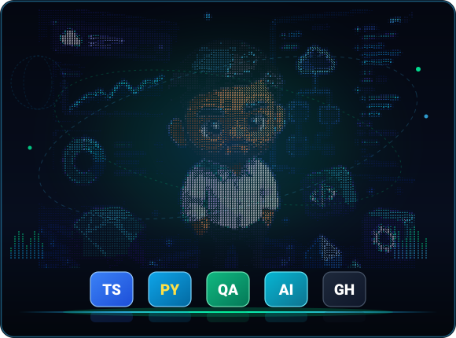
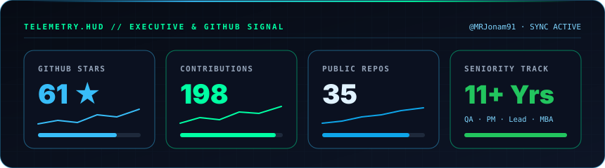

|
🟢 DIGITAL ENGINEER · COMMUNICATION, MANAGEMENT, DEV & QA · TURIN, ITALY Manoj RolloSenior Digital Test Engineer · QA Manager · Project Manager & AI Builder
Senior Consultant L2 @ Concept Quality Reply
|
 |
| 11+ Years of Experience |
35 Open Source Repositories |
61 ★ GitHub Stars |
5+ Roles & Domains |
5 Languages (IT · EN · ES · DE · FR) |
🎯 About & Strategic Value
🛡️ Quality & Performance Engineering360° quality engineering for enterprise digital platforms, microservices, APIs, and ERP/CRM suites. Architect of robust E2E Test Automation, Performance, Load & Stress Testing, and AI System Testing pipelines. |
📐 PM & Team LeadershipLeading cross-functional software engineering and QA teams with Agile Scrum & Kanban frameworks. Translating business roadmaps into clear user stories, risk mitigation plans, KPIs, and quality gates. |
🤖 AI Systems & Modern ArchitectureActive builder in Model Context Protocol (MCP), Local LLMs (Ollama/vLLM), RAG, WebAssembly sandboxes, and Local-First / CRDT sync architectures. |
💼 Professional Experience & Key Milestones
| Period | Role | Company | Key Technologies & Impact |
|---|---|---|---|
2025 - Present |
Senior Consultant L2 QA Test Engineer & PM |
Concept Quality Reply | QA Automation strategy, Performance benchmarking, Enterprise ERP/CRM validation & Project Management. |
2023 - 2025 |
Senior Consultant L1 QA Lead & Test Automation |
Concept Quality Reply | Continuous testing pipelines, JMeter/Selenium test harnesses, Team Leadership & Delivery Management. |
2022 - 2023 |
Consultant L3 QA & Performance Engineer |
Concept Quality Reply | API Testing (Postman/Newman), Performance profiling, Jenkins CI/CD integration, Microservices QA. |
2020 - 2022 |
QA Validation Specialist | Concept Quality Reply | Functional, regression & load testing for tier-1 financial and telco platforms. Java, Selenium & Gatling. |
2018 - 2020 |
Digital Media Engineer & UX | Marcopolo Visualizer | Interactive systems, UI/UX prototyping, frontend architecture, multimedia processing. |
🛠️ Technical Arsenal & Competencies

| Domain | Technologies, Frameworks & Methodologies |
|---|---|
| QA & Performance | Selenium · Cypress · Playwright · JMeter · Gatling · Postman · Newman · Polarion · TestRail |
| Languages | TypeScript (34%) · HTML/CSS (31%) · Python (22%) · Java · SQL · Bash / Shell |
| AI & Emerging Tech | Model Context Protocol (MCP) · Ollama · vLLM · RAG · WebAssembly (WASM) · CRDT (Automerge/Yjs) · Docker |
| Management & Methods | Agile / Scrum · Kanban · Jira · Confluence · Business Analysis (IIBA) · PMP Prep · Risk Assessment |
🚀 Featured Open Source & High-Impact Projects

🟦 AI Governance, Testing & Local-First Security
|
🟩 Automation, Civic Tech (Turin/Italy) & Web
|
📊 GitHub Telemetry & Contribution Consistency

